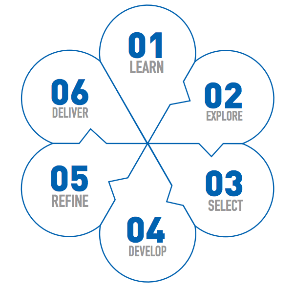

My Process

- 01 LEARN
-
Gain knowledge of users, context, technologies, gather user data, research competitive products, conduct interviews and filed studies.
- 02 EXPLORE
-
Build user profiles on gathered data, produce materials that will aid the outlining of the project, site maps, content inventories, screen flows, navigation models, task flows, user journeys, scenarios.
- 03 SELECT
-
Evaluate, test, and select wireframe concepts for prototype development.
- 04 DEVELOP
-
Create design specifications and evolve concept/wireframes into full design solution.
- 05 REFINE
-
Evaluate design with stakeholders to obtain feedback and conduct usability testing.
- 06 DELIVER
-
Complete design and produce deliverables.